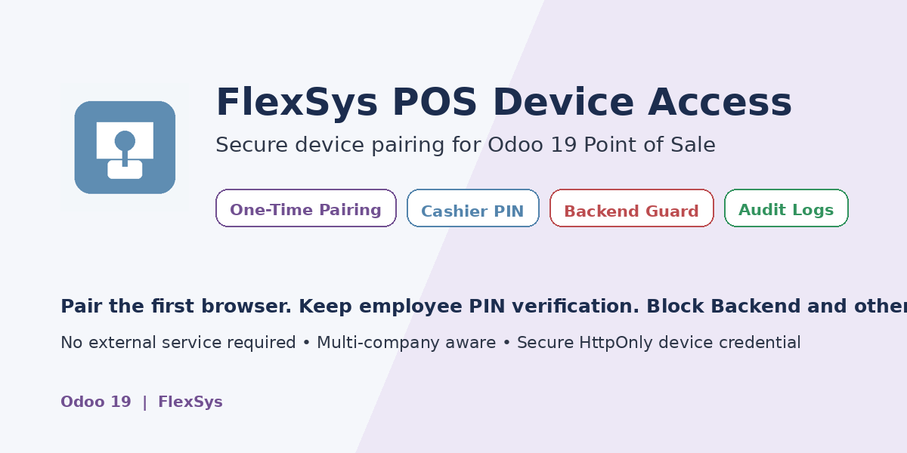
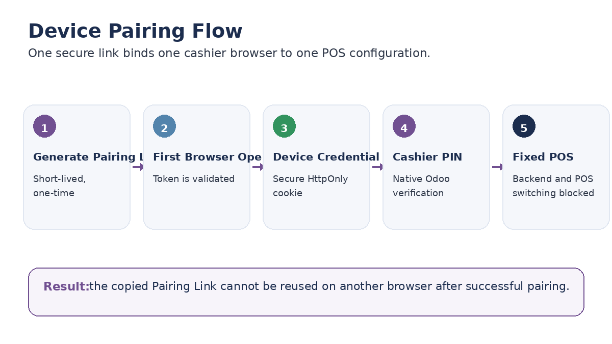
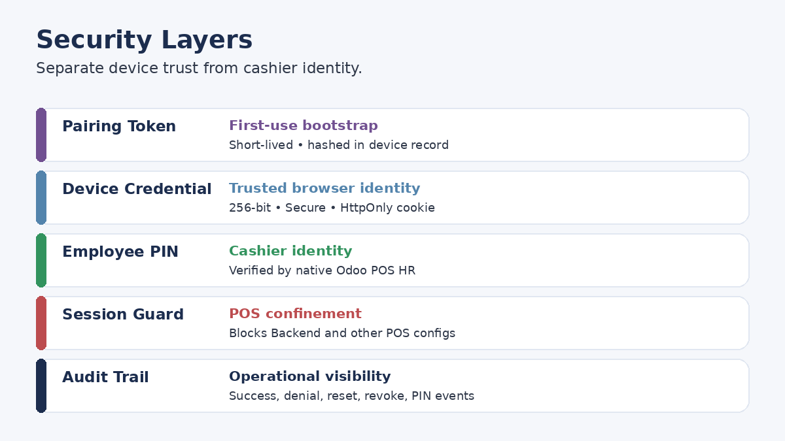
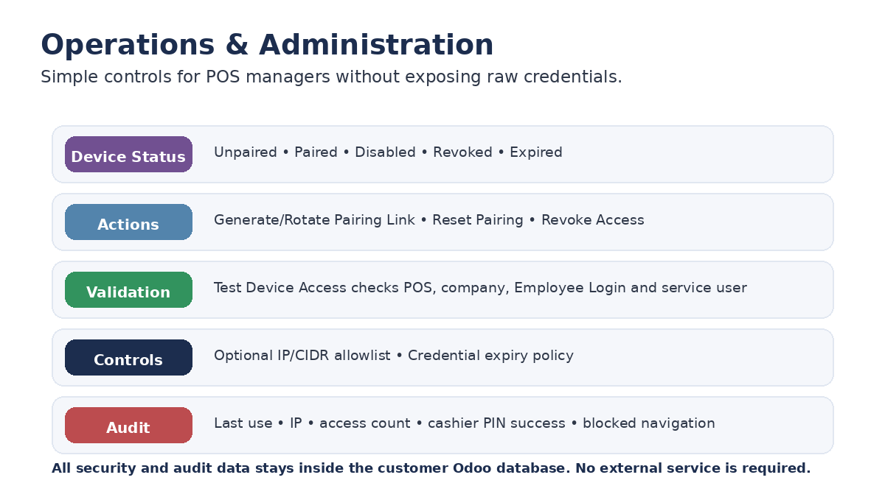

Secure one-time device pairing for Odoo 19 Point of Sale

Pair the first browser with a short-lived one-time link, open only the assigned POS, and keep native employee PIN verification mandatory.
The first browser that successfully consumes the Pairing Link becomes the paired browser. The link is consumed immediately and cannot pair another browser.
Device trust does not replace cashier identity. Odoo POS employee PIN verification remains mandatory before entering the selling interface.
Device-authenticated sessions are confined to the configured POS. Backend navigation and attempts to open another POS configuration are blocked and audited.


Track pairing, successful device access, invalid tokens, expired credentials, resets, revocations, blocked Backend navigation, blocked POS switching, and cashier PIN-success metadata. Raw employee PIN values are never recorded by this module.

Odoo 19 with Point of Sale and Employee Login. The module depends on pos_hr and web.
No external cloud service, activation server, or third-party API is required.
Device configuration, credential hashes, IP/User-Agent metadata, and audit events remain in the customer's Odoo database. The module does not transmit customer data to FlexSys or another external service.
Device Pairing binds a browser profile through a protected credential cookie. It is not TPM/MDM hardware attestation. Protect cashier workstations with normal endpoint controls such as OS account security, disk encryption, kiosk policies, and device management where required.
Odoo 19 • Point of Sale • FlexSys
Secure device access without replacing Odoo cashier verification.
Support: info@flexsyssa.com